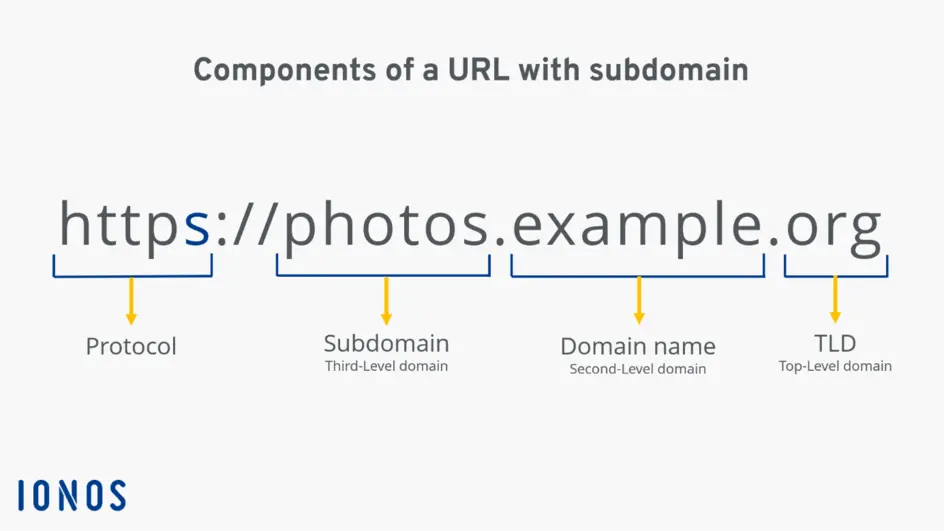

Sebelum memulai lab, baik untuk dibahas terlebih dahulu tentang apa itu DNS?
USER: saya mau mengunjungin google.com, IP address nya apa?
DNS: google.com -> 8.8.8.8
USER: IP address 8.8.8.8 itu milik siapa yah?
DNS: 8.8.8.8 -> google.com
DNS adalah kepanjangan dari Domain Name System.
Bertugas untuk melakukan pemetaan dari IP address ke sebuah nama domain atau kebalikannya.
Berikut adalah struktur format dari nama DNS(ref):

Jawaban: Tergantung dari permintaan klien! tetapi dari kebanyakan kasus, anda tidak perlu melakukannya.
Kenapa? Penetration Testing secara dasar sangat berfokus pada cangkupan jadi jika klien hanya mencantumkan target website “website-test.id”, berarti yang di uji keamanannya hanya di domain itu saja. Anda tidak perlu mencari subdomain atau domain yang lain.
Jadi kapan pakai teknik ini?
Untuk melakukan DNS reconnaisance/enumeration sendiri anda dapat memanfaatkan program dari 3rd party ini: